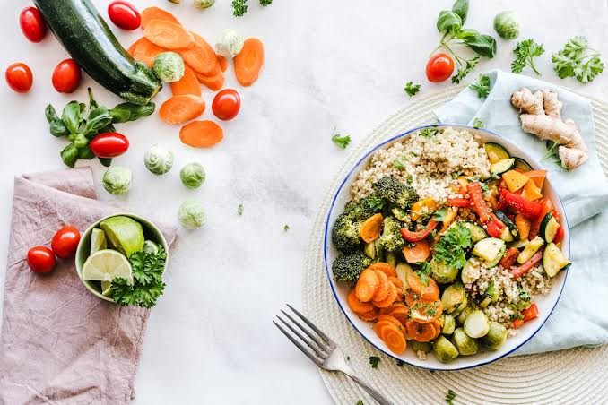

NOSSA MOTIVAÇÃO
Comer bem começa por entender o que colocamos no prato.
100% focado em educação alimentar
Diário Alimentar e Registro Nutricional
SOBRE O PROJETO
O NutriNaMão nasceu para aproximar as pessoas das próprias escolhas alimentares por meio de informação clara, acompanhamento diário e tecnologia.

NOSSA MOTIVAÇÃO
100% focado em educação alimentar
O PROBLEMA QUE QUEREMOS RESOLVER
Rótulos difíceis de interpretar, dados espalhados e aplicativos complexos afastam muitas pessoas do acompanhamento alimentar. O NutriNaMão reúne registro, planejamento e análise em uma interface acolhedora e objetiva.
A proposta não é substituir nutricionistas, mas oferecer uma ferramenta educacional que apoie decisões mais conscientes e facilite conversas com profissionais de saúde.